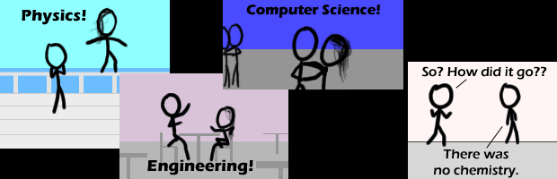

Comic JK 471
When I Feel Like It
⇤
<
?
>
⇥

⇤
<
?
>
⇥
Forum
.
RSS
.
Digg
.
Facebook
.
Reddit
.
Twitter
.
Stumbleupon
Enter your thoughts on number 471 here. Please, no spamming, trolling, or phreaking. Your mother stole all the chemistry for use between her and dorky college boys. That has to be one of the best strips about dating I have _ever_ seen! <Thanks> Is there any way you can have the comics in the RSS feed? instead of clicking, and then laughing, because it disrupts the chain of laughter. >Is there any way you can use mod_rewrite for /comic/latest instead of /comic.php/latest? It looks a lot better in the address bar. I second this. Third. Fourth. Sixth. Purple Gorilla Huh? No, Purple People Eater. Get It Right, People! We've only got for more days until.... "We're no strangers to love........" >You guys are all morons >>At least we're not douches, unlike you - Negative Twoth >>Mormons? >>>Close enough. >>>I'm not sure if that's legal in this state. >>>>Unless your in Africa, paedophilia is illegal. >>>>> ^ Or if you're a Mormon >>>>>>Touché >>>>>AoC in Japan is variable, AoC in Afghanistan is 13. If Paedophilia is defined as <16, it's legal in lots of places... I don't actually get what the pictures symbolize, can someone explain it to someone whose mind works at 56k? >Physics is known as a natural science that involves the study of matter and its motion through space-time, as well as all applicable concepts, such as energy and force. More broadly, it is the general analysis of nature, conducted in order to understand how the universe behaves. Therefore, the first picture represents gravity by having the woman stick figure elevated upon a rail structure. This would be a pun about the physical intimacy that is needed in humans' mating habits. >>Engineering is the discipline, art and profession of acquiring and applying technical, scientific, and mathematical knowledge to design and implement materials, structures, machines, devices, systems, and processes that safely realize a desired objective or invention. Taking the aforementioned information to mind, one can suppose that the second frame represents the conversation and how easily they work together, as communication is important to human mates. >>Computer science is the study of the theoretical foundations of information and computation, and of practical techniques for their implementation and application in computer systems. That being said, the third panel represents the actual application of the human mating ritual, i.e. kissing, which would be used to express feelings. >>>The fourth panel is a pun on the human mating ritual. When one seeks out a potential mate, one looks for certain features that appeal to them. That or she rejected him and this is his excuse. >>>> Holy Overexplanation, Batman... Methinks you've overthought it. >>>> Explained enough? >>>>>> Somebody's got mother issues. I'm just saying. Baths don't require that much touching....when your 22.... >>>>>Deconstructionism is one thing, but you just wrote a thesis... >>>>>>56k was requested. >>>>>>>>Jesus, most of your conclusions absolutely did not follow what you had just said. >>>>>>>>> I agree :/ >>>>>>>>>>>>>>>>>That was the best fucking explanation ever. You are forever my hero >>>>>>>>>>>>>>>>>>>>>>>>>>>>Someone is amazing